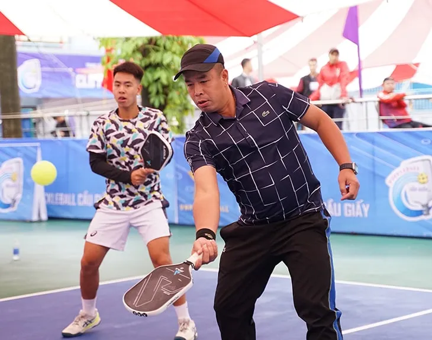
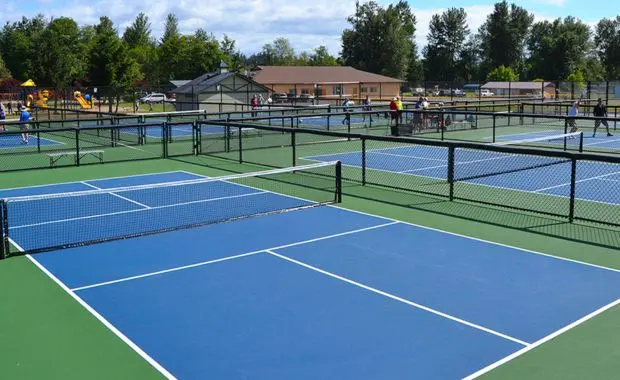
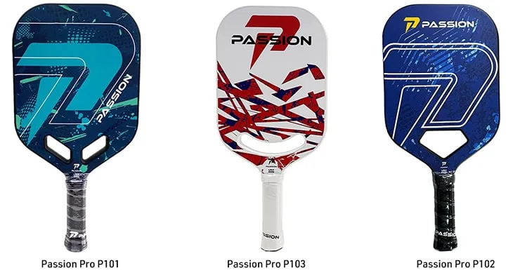
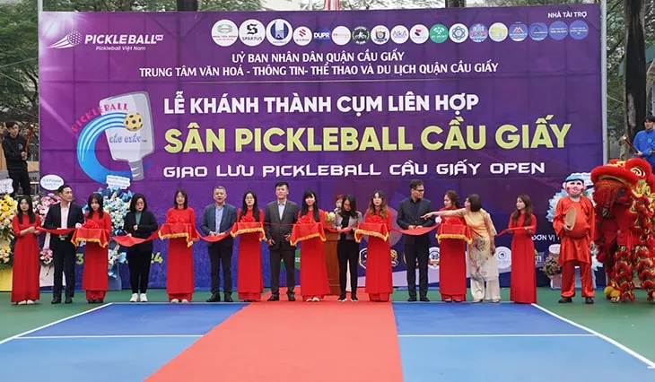

Tham khảo ngay luật chơi môn Pickleball
Tìm hiểu luật chơi Pickleball, môn thể thao mới lạ đang thu hút giới trẻ
Pickleballlà một môn thể thao mới lạ đang được ưa chuộng tại Việt Nam trong những năm gần đây. Được biết đến từ năm 1965 tại Mỹ, Pickleball đã nhanh chóng lan rộng ra khắp các quốc gia trên thế giới và trở thành một môn thể thao phổ biến.
Với sự kết hợp giữa bóng chuyền, tennis và bóng bàn, Pickleball mang đến cho người chơi những trải nghiệm thú vị và đầy thử thách.
Trong bài viết này, chúng ta sẽ cùng tìm hiểu về luật chơi Pickleball, sân chơi, dụng cụ cần thiết và cách chơi để có thể tham gia vào trò chơi này một cách hiệu quả. Ngoài ra, chúng ta cũng sẽ cùng nhau khám phá điểm số trong Pickleball và những lưu ý cần thiết khi tham gia vào trò chơi này. Hãy cùng bắt đầu!
Giới thiệu về môn thể thao Pickleball
Pickleball là một môn thể thao đơn giản và dễ chơi, có thể được chơi bởi mọi lứa tuổi và trình độ. Trò chơi này thường được chơi trong những khu vực ngoài trời như sân cỏ, sân bóng rổ hoặc sân tennis.
Được biết đến với cái tên "môn thể thao gia đình", Pickleball là một trò chơi giải trí và rèn luyện sức khỏe tuyệt vời cho cả gia đình.

Lịch sử của Pickleball
Pickleball được phát minh vào năm 1965 bởi Joel Pritchard, một cựu thành viên của Quốc hội Hoa Kỳ, và hai người bạn của ông là Bill Bell và Barney McCallum. Ban đầu, họ chỉ muốn tạo ra một trò chơi giải trí cho gia đình và bạn bè trong khu vực của họ tại bang Washington, Mỹ.
Tuy nhiên, trò chơi này đã nhanh chóng lan rộng ra khắp các bang ở Mỹ và trở thành một môn thể thao phổ biến. Năm 1976, Pickleball đã có luật chơi chính thức và được thành lập Hiệp hội Pickleball Hoa Kỳ (USAPA). Từ đó, trò chơi này đã lan tỏa ra khắp thế giới và được chơi tại hơn 40 quốc gia.
Tại sao lại có cái tên Pickleball?
Câu chuyện về nguồn gốc cái tên Pickleball cũng rất thú vị. Theo như Joel Pritchard kể lại, khi ông và hai người bạn đang chơi trò chơi mới này, con chó của ông là "Pickle" đã lấy cắp bóng và chạy đi. Từ đó, họ quyết định đặt tên cho trò chơi là "Pickle's ball" (bóng của Pickle). Dần dần, người ta chỉ gọi nó là Pickleball và cái tên này đã trở thành tên gọi chính thức cho môn thể thao này.
Luật chơi Pickleball
Luật chơi Pickleball khá đơn giản và dễ hiểu. Trò chơi này được chơi bởi hai đội, mỗi đội có 2 người hoặc 4 người. Mục tiêu của trò chơi là đưa bóng qua một mạch ngang giữa sân của đối phương mà không để bóng chạm đất.
Sân chơi Pickleball
Sân chơi Pickleball có kích thước tương tự như sân đôi tennis, với chiều dài 13,4 mét và chiều rộng 6,1 mét. Đường biên của sân được chia làm hai phần bằng một mạch ngang giữa sân, gọi là "khu vực không chơi" (non-volley zone). Khu vực này có chiều rộng 2,7 mét và bao gồm cả đường biên và đường kẻ song song với đường biên. Ngoài ra, sân còn có các đường kẻ để chia thành các ô nhỏ hình vuông với kích thước 0,9 mét.

Dụng cụ Pickleball
Để có thể chơi Pickleball, bạn cần chuẩn bị những dụng cụ sau:
- Vợt Pickleball: Vợt Pickleball có hình dáng giống vợt bóng bàn nhưng lớn hơn và có tay cầm dài hơn. Chất liệu của vợt thường là nhựa hoặc gỗ và có trọng lượng nhẹ giúp người chơi dễ dàng điều khiển.
- Bóng Pickleball: Bóng Pickleball có kích thước nhỏ hơn bóng tennis và được làm từ cao su. Trọng lượng của bóng cũng nhẹ hơn để người chơi có thể điều khiển dễ dàng hơn.

- Giày thể thao: Để có thể di chuyển linh hoạt trên sân, bạn cần sử dụng giày thể thao với đế bám tốt và thoáng khí.
Nếu bạn mới bắt đầu chơi Pickleball, bạn có thể mượn dụng cụ từ các thành viên trong nhóm hoặc tại các sân chơi công cộng. Tuy nhiên, nếu bạn muốn nâng cao kỹ năng và chơi thường xuyên, bạn có thể đầu tư mua vợt pickleball chính hãng tại các cửa hàng thể thao hoặc đặt hàng trực tuyến.
Cách chơi Pickleball
Trước khi bắt đầu trò chơi, hai đội sẽ lựa chọn người giao bóng bằng cách tung đồng xu hoặc chơi ván đấu nhỏ. Người giao bóng sẽ đứng ở vạch đường biên phía sau và tung bóng lên để bắt đầu trò chơi.
Giao bóng
Người giao bóng phải đưa bóng qua mạch ngang giữa sân và bắt đầu trò chơi. Bóng phải được giao bằng tay và không được đẩy hoặc đánh bằng vợt. Nếu bóng rơi vào khu vực không chơi hoặc bóng chạm đất, điểm sẽ được tính cho đội đối phương.
Cách đánh bóng
Sau khi giao bóng, hai đội sẽ lần lượt đánh bóng cho đến khi một trong hai đội mắc lỗi. Để đánh bóng, người chơi phải đứng ngoài khu vực không chơi và đưa bóng qua mạch ngang giữa sân. Người chơi có thể đánh bóng bằng tay hoặc bằng vợt, nhưng không được đánh bằng cú đập (smash).
Kết thúc ván đấu
Ván đấu sẽ kết thúc khi một trong hai đội đạt được 11 điểm và chênh lệch ít nhất 2 điểm so với đối thủ. Nếu điểm số là 10-10, ván đấu sẽ tiếp tục cho đến khi một trong hai đội đạt được 2 điểm liên tiếp để giành chiến thắng.
Điểm số trong Pickleball
Điểm số trong Pickleball khá đơn giản và dễ hiểu. Mỗi lần đánh bóng thành công, đội sẽ được tính 1 điểm. Điểm số sẽ được tính cho cả hai đội khi:
- Bóng chạm đất hoặc rơi vào khu vực không chơi.
- Người chơi đánh bóng sai quy tắc, ví dụ như đánh bóng ra ngoài sân hoặc đánh bóng trúng người đối thủ.
Điểm số sẽ được tính cho đội đối phương khi:
- Đội của bạn mắc lỗi.
- Bạn không thể đưa bóng qua mạch ngang giữa sân.
- Bạn đánh bóng ra ngoài sân hoặc bóng chạm đất.
Pickleball là một môn thể thao mới lạ và đầy thú vị đang thu hút giới trẻ tại Việt Nam. Với luật chơi đơn giản và dễ hiểu, ai cũng có thể tham gia vào trò chơi này mà không cần phải có kỹ năng đặc biệt. Ngoài việc rèn luyện sức khỏe, Pickleball còn mang lại những giờ phút giải trí và gắn kết gia đình và bạn bè.

Nếu bạn muốn tìm địa chỉ bán vợt Pickleball chính hãng, bạn có thể ghé thăm website pickleball.vn để có thể mua được những sản phẩm chất lượng và đảm bảo. Hãy cùng tham gia vào trò chơi này và khám phá thêm nhiều điều thú vị về môn thể thao Pickleball nhé!
Bài viết liên quan